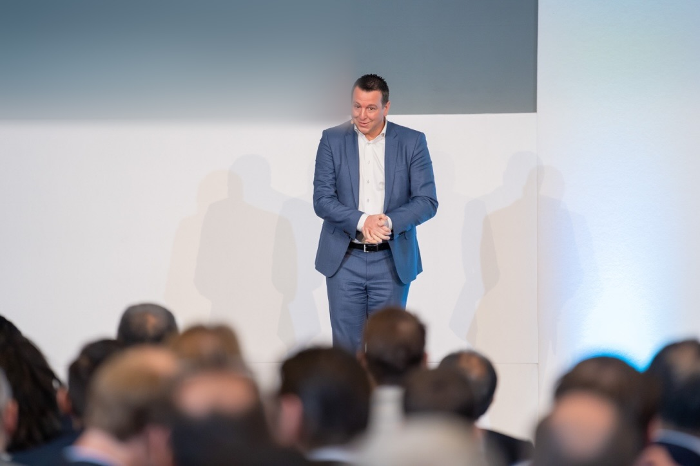

Uncomfortable honesty
You hear what is really happening early, while it is still cheap to fix. Polite advice costs you a year; an honest conversation costs you an hour.

Founder, OPS Detox™TEDx speaker17 years inside complex international organizations
Founder of OPS Detox™ and TEDx speaker. At Sony Europe Oscar worked across seven functions and 29 countries, leading the work that halved the reporting, removed close to a third of the meeting time and moved decisions closer to the people doing the work. Today he brings that experience to scale-up founders.
Oscar de Grauw spent seventeen years at Sony Europe, across sales, marketing, procurement, business planning, operational excellence, reporting and transformation. In a global organisation, meetings, reports and approval layers often outlive the reason they were created. Much of his work was finding them and taking them out
Before Sony, an expat childhood in the United States, Germany and the Netherlands and two years as a flight attendant taught him to notice what people feel but do not say. After Sony, a sabbatical across Asia and the Pacific turned seventeen years of hands-on work into a method.
Led the operational detox at Sony Europe: reporting reduced from 167 reports to 78, close to a third of the meeting time removed across 29 countries and decision authority raised from €500 to €10,000.
Founded OPS Detox™: a consultancy that helps scale-up founders strip operational clutter together with their team, through Operational Flow and Organisational Flow.
TEDx speaker and workshop facilitator: keynotes and leadership workshops, including the Speak Up Gym and the Out Loud card game, where teams practise saying the uncomfortable thing out loud.
Early years
USA, Germany, Netherlands. Multiple schools, cultures and languages. Learning to adapt before it was a skill anyone was talking about.

Pre-corporate
Service, safety, cultural intelligence, non-verbal communication. The ability to read a room without anyone saying a word.
First chapter
An early role that planted the question he would spend the next two decades answering: where does time actually go inside an organization?

17 years
Sales, deployment, procurement, business planning, marketing, process design and strategic operational excellence. Seven functions. One recurring pattern.

The turning point
A deliberate pause. Travel. Two ebooks. A mountain summit. A relationship that changed the lens. A coaching trajectory that turned insight into clarity.
Now
Senior IP-driven consultant. Seven modules. Proprietary frameworks. A clear mission: help growing organizations remove the friction that keeps them stuck.
You hear what is really happening early, while it is still cheap to fix. Polite advice costs you a year; an honest conversation costs you an hour.
Every decision and every process leaves the engagement with a named owner. The new structure belongs to your team, not to OPS Detox.
Adding a meeting is easy. Stripping one out takes nerve. OPS Detox helps you make the deliberate choices that habit has been making for you.
The expensive thing gets said out loud, early.
Fewer moving parts, named owners, visible decisions.
Every process has someone who can act on it.
Implementation, not a report.
Stripping things out takes more nerve than adding them.
From the inside out, not an outsider with a framework.
Clarity is the default. Switch back to see the noise.